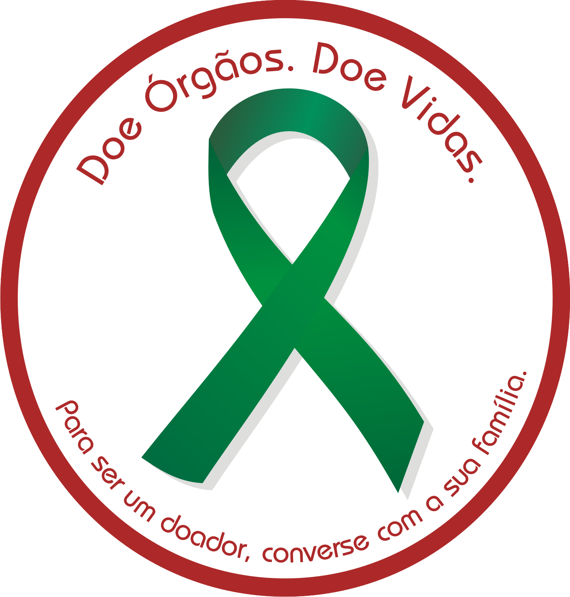

Setembro Verde é o mês dedicado à conscientização sobre a doação de órgãos. É uma oportunidade para refletir sobre esse
gesto de solidariedade que pode salvar vidas e melhorar a qualidade de vida de muitos outros.
Muitos pacientes dependem da doação de órgãos para viver melhor.
A doação é um ato de compaixão que faz a diferença na vida de muitas famílias.
E Como Você pode ajudar?
Informe-se e Compartilhe: Conheça os procedimentos e benefícios da doação de órgãos e espalhe essa mensagem.
Converse com Sua Família: Deixe claro seu desejo de ser doador para seus familiares.
Participe de Eventos: Durante o Setembro Verde, participe das ações de conscientização em sua comunidade e nas redes sociais.
Dados Importantes
Lista de Espera: Milhares de pessoas estão na lista de espera por um transplante no Brasil.
Falta de Doadores: A maior parte das pessoas na lista de espera não consegue um doador a tempo, devido à falta de doadores disponíveis.

Juntos, Podemos Fazer a Diferença Compartilhe essa mensagem, participe das campanhas e ajude a
transformar vidas. A doação de órgãos é um ato de amor que permanece vivo.